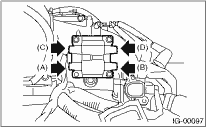

IGNITION(H4SO) > Ignition Coil and Ignitor Assembly
Check the secondary coil resistance using a tester. Replace if defective.
CAUTION:
• If the resistance is extremely low, it indicates the presence of a short-circuit.
• Ignitor is integrated with the coil. Therefore the resistance of primary side coil cannot be measured.
Specified resistance: [Secondary side]
Between (A) and (B)
11.2 kΩ ±15%
Between (C) and (D)
11.2 kΩ ±15%
